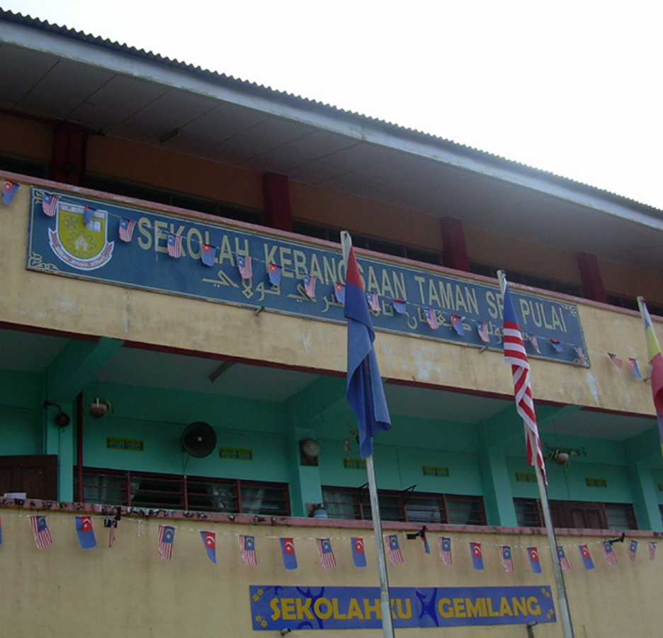
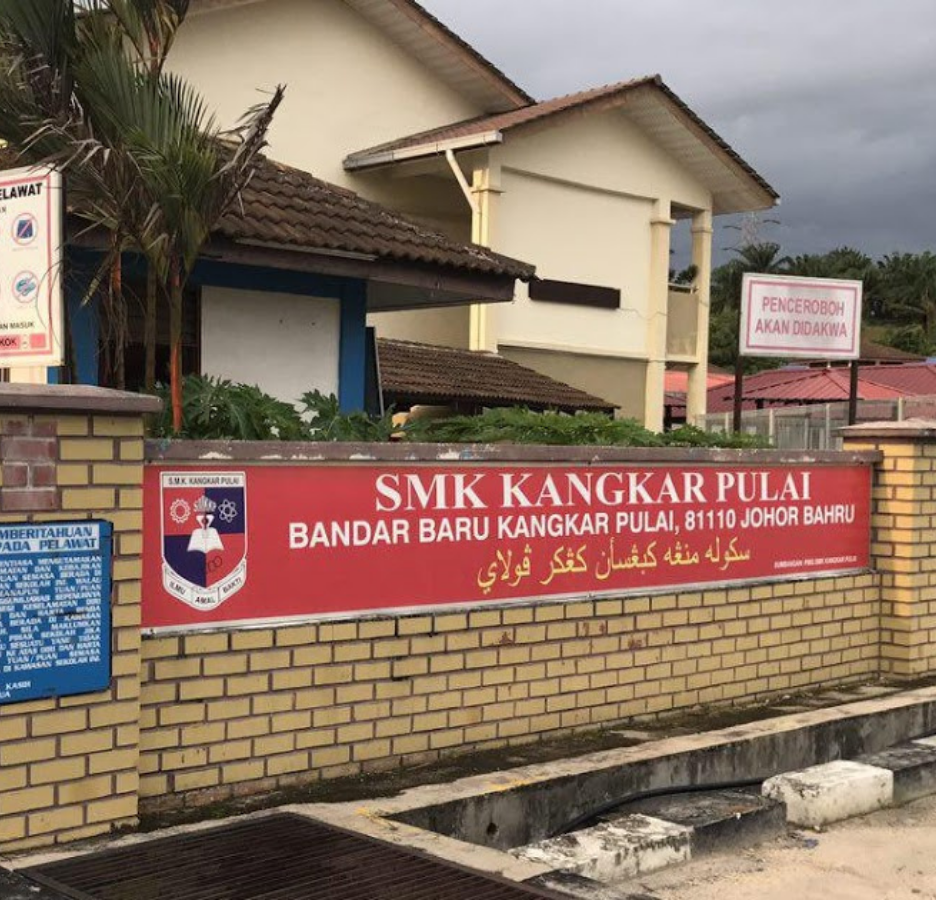
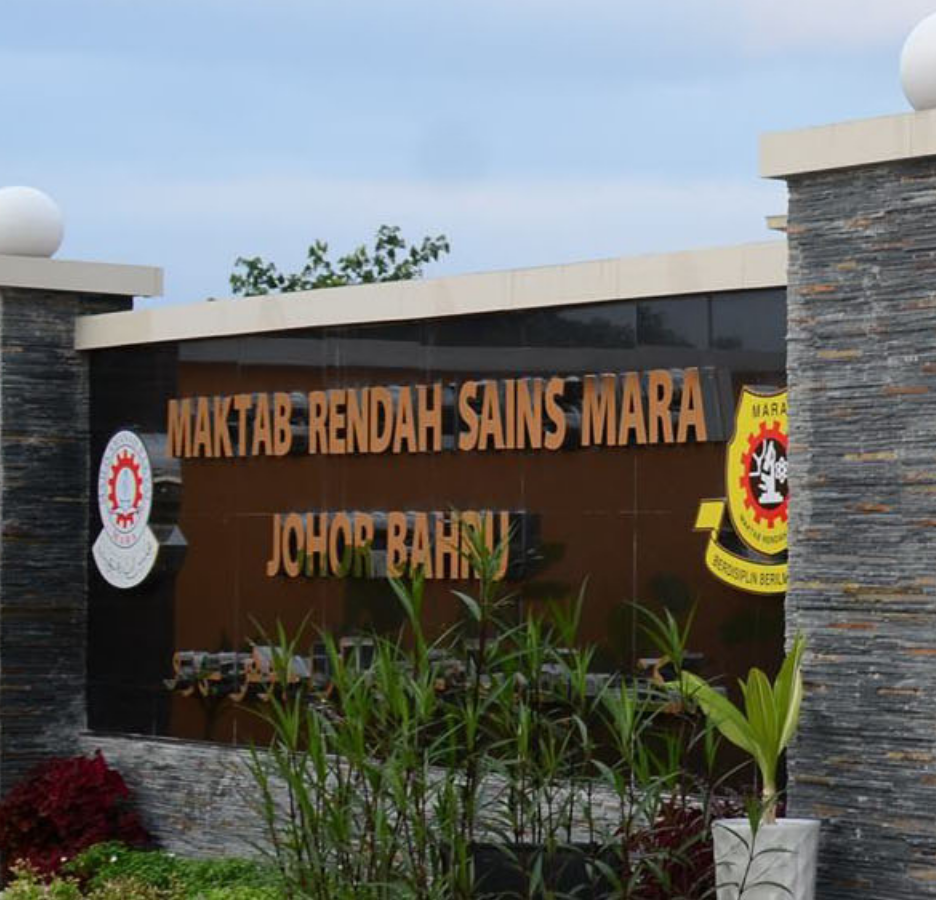
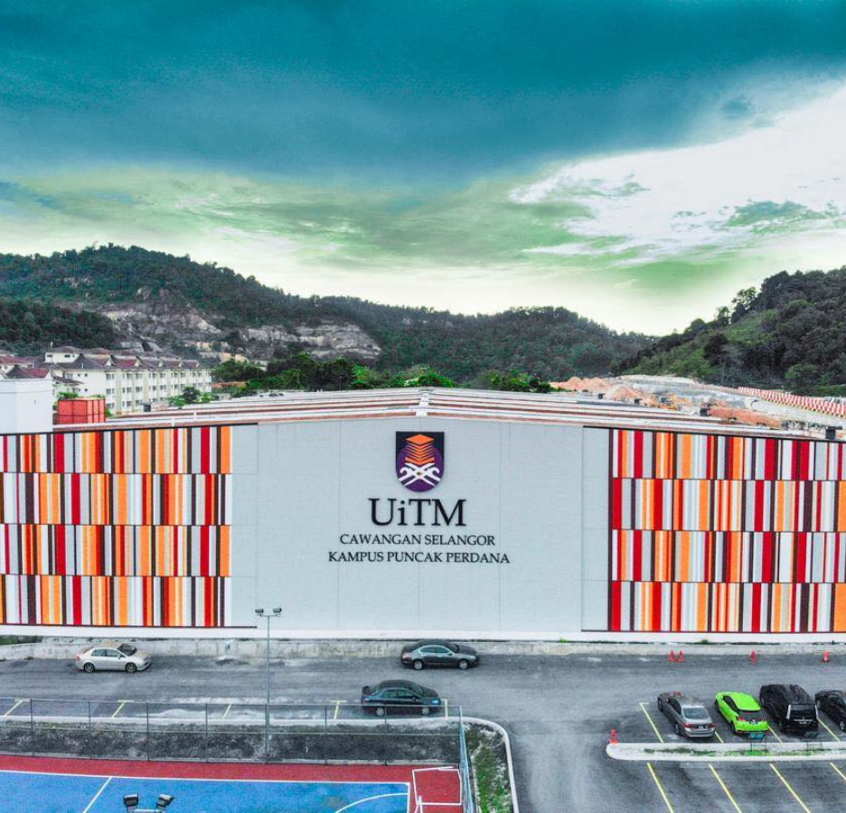

|  |  |  |  | |
|---|---|---|---|---|
Primary School |
High School |
High School |
University |
University |
Sekolah Rendah Kebangsaan Taman Sri Pulai, Johor Bahru, Johor. |
Sekolah Menengah Kebangsaan Kangkar Pulai, Nusajaya, Johor. |
Maktab Rendah Sains Mara Johor Bahru, Pasir Gudang, Johor |
Universiti Teknologi Mara (UiTM) Puncak Alam, Klang, Selangor. |
Universiti Teknologi Mara (UiTM) Puncak Perdana, Shah Alam, Selangor. |
Ujian Pencapaian Sekolah Rendah (UPSR) 4A 1B |
Penilaian Menengah Rendah (PMR) 8A |
Sijil Pelajaran Malaysia (SPM) 6A 4B |
CGPA 3.45 |